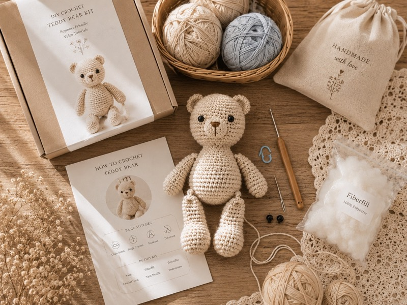

Nguyên liệu · Người mới
Set tự móc len cho người mới — kit handmade trọn gói tại Tiệm Len Nhà Tiny
Không biết bắt đầu từ đâu? Set tự móc của Tiny đã gom sẵn len, kim, bông nhồi và hướng dẫn — bạn chỉ cần mở ra là có thể bắt đầu móc ngay, không cần mua thêm gì.

Set tự móc len là gì?
Set tự móc là bộ nguyên liệu đã được Tiny tính toán sẵn cho 1 sản phẩm handmade cụ thể — thường gồm len đủ số lượng, kim móc phù hợp, bông nhồi, phụ kiện cần thiết (như mắt nhựa, đánh dấu mũi, kim khâu) và hướng dẫn từng bước để bạn tự làm tại nhà.
Thay vì phải đi tìm từng thứ ở nhiều nơi và lo mua đủ màu, đủ lượng — mở set ra là bắt đầu được ngay. Đây là lý do set tự móc rất được yêu thích, đặc biệt với người mới học móc và người muốn thử handmade lần đầu.
Ai nên chọn set tự móc?
- Người mới học móc len: Không biết mua len gì, kim cỡ nào — set có sẵn hết, chỉ cần theo hướng dẫn là làm được.
- Người muốn trải nghiệm handmade tại nhà: Buổi tối thư giãn với len và kim, không cần học quá nhiều trước.
- Tìm quà tặng ý nghĩa cho người thích handmade: Set tự móc là quà rất đáng yêu, vừa thiết thực vừa sáng tạo.
- Người muốn làm quà thủ công cho người thân: Tự tay móc một bé thú len nhỏ tặng bạn bè, người yêu hoặc em bé.
Set tự móc tại Tiny thường gồm những gì?
- Len sợi (đã chia màu, đủ số lượng cho 1 sản phẩm)
- Kim móc phù hợp với loại len trong set
- Bông nhồi polyester mềm, an toàn
- Mắt nhựa, kim khâu, đánh dấu mũi (tùy mẫu)
- Hướng dẫn móc chi tiết theo từng bước
Thành phần cụ thể có thể thay đổi tùy mẫu và yêu cầu. Nhắn Tiny để xem các mẫu set hiện có và chọn set phù hợp với mức độ của bạn.
Giá tham khảo set tự móc
| Mẫu set | Giá tham khảo | Ghi chú |
|---|---|---|
| Set móc thú bông nhỏ (dạng móc khóa) | Từ 100.000đ | Kích thước mini, ít chi tiết |
| Set móc thú bông size vừa | Tùy mẫu | Có nhiều chi tiết hơn, phù hợp người đã luyện tay |
| Set móc hoa len | Tùy mẫu | Gồm len, kim và hướng dẫn móc hoa cơ bản |
Nhắn Zalo 0909.281.029 để Tiny tư vấn mẫu phù hợp với trình độ và ngân sách của bạn.
Vì sao nên chọn set tự móc của Tiệm Len Nhà Tiny?
- Tiny tự móc nên hiểu rõ người mới cần gì và gặp khó ở đâu — set được chuẩn bị đúng với nhu cầu thực tế.
- Len và phụ kiện được chọn lọc phù hợp với nhau, không lo mua nhầm kim quá nhỏ hay quá lớn.
- Hướng dẫn đi kèm được viết dễ hiểu, có thể hỏi thêm qua Zalo nếu bí bước nào.
- Có thể đóng hộp quà, thêm thiệp nếu bạn muốn tặng ai đó.
Câu hỏi thường gặp về set tự móc
Set tự móc có phù hợp người chưa biết móc bao giờ không?
Phù hợp. Tiny sẽ gợi ý mẫu đơn giản nhất cho người mới, có hướng dẫn từng bước và sẵn sàng hỗ trợ thêm qua Zalo nếu bạn gặp khó khăn.
Tôi có thể chọn màu len trong set không?
Tùy mẫu. Một số set có thể chọn màu, một số set có màu cố định theo mẫu. Nhắn Tiny để biết các lựa chọn màu cho từng mẫu cụ thể.
Set tự móc có thể làm quà tặng không?
Rất phù hợp. Tiny có thể đóng hộp quà, thêm thiệp hoặc gói thơm tho nếu bạn muốn tặng. Nhắn Tiny để báo thêm yêu cầu.
Set có giao toàn quốc không?
Có. Tiệm Len Nhà Tiny hỗ trợ giao hàng toàn quốc. Đóng gói cẩn thận, đảm bảo nguyên liệu không bị xộc xệch khi nhận.
Đọc thêm từ blog LenTiny
Muốn bắt đầu hành trình handmade?
Nhắn Tiny qua Zalo để Tiny gợi ý set phù hợp và tư vấn mẫu dễ làm nhất cho lần đầu của bạn!